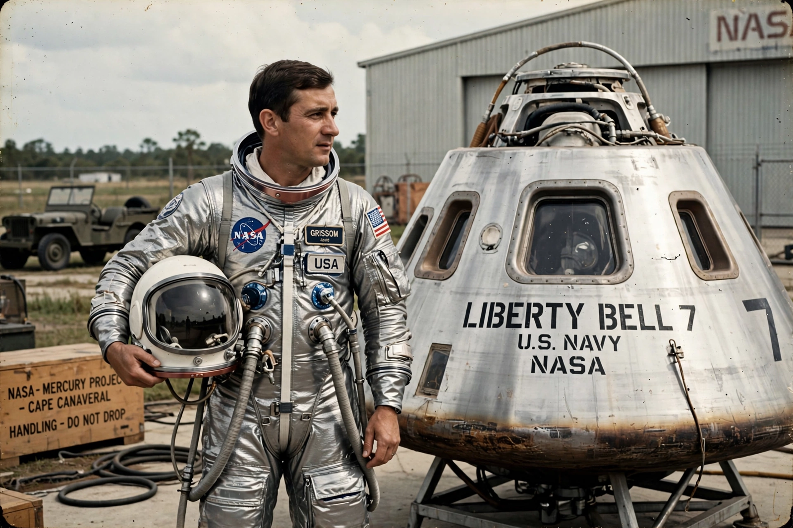

Gus Grissom
From Wikipedia, the free encyclopedia
| Gus Grissom | |
|---|---|
| Born | 3 April 1926, Mitchell, Indiana |
| Died | 27 January 1967 (aged 40), Cape Canaveral |
| Occupation | Astronaut, test pilot |
| Missions | Mercury-Redstone 4, Gemini 3 |

Grissom during Mercury training.Virgil Ivan "Gus" Grissom (1926–1967) was an American test pilot and one of the Mercury Seven. He was the second American in space, flying the suborbital Mercury-Redstone 4 mission (Liberty Bell 7) in July 1961, and later commanded Gemini 3, the first crewed Gemini flight. He died with crewmates Ed White and Roger Chaffee in the Apollo 1 fire on 27 January 1967.
On Liberty Bell 7, Grissom's hatch blew prematurely after splashdown; he escaped as the capsule flooded and sank, and narrowly avoided drowning. The capsule was recovered from the ocean floor in 1999. Grissom maintained to his death that he had not blown the hatch early.
Gemini and Apollo
Grissom named his Gemini 3 spacecraft Molly Brown — after the unsinkable Broadway heroine, a wry reference to Liberty Bell 7 — and with John Young made the first crewed orbital manoeuvres in March 1965. As one of NASA's most experienced astronauts he was assigned to command the first Apollo flight, and was widely expected to be a candidate to command the first lunar landing.
See also
Apollo 1 · Mercury Seven · Project Mercury · Edward White (astronaut)